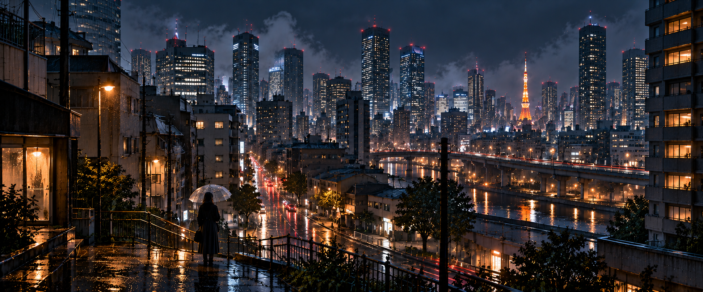
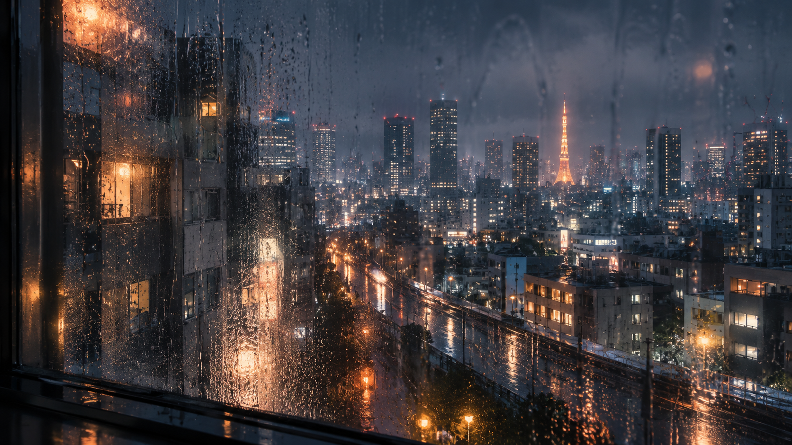

雨 / AME
TOKYO
2:17 AM
Loading Tokyo
A quiet night. Stay a while.
图片加载失败，请刷新重试。
AME
—
TOKYO
2:17 AM
TOKYO
2:17 AM
AME — TOKYO
雨夜的声音
×
01 / RAIN
动态雨丝
48
02 / ENVIRONMENT
雨夜环境
75
镜头缓慢推进
拖动探索 · 双指或滚轮靠近
03 / MUSIC
♫ MUSIC
OFF
AMBIENT I
AMBIENT II
RAINY JAZZ
音乐音量
55
2:17 AM / 雨は、まだ降っている。
轻触画面，回到雨夜
↻
请横转手机
Tokyo is a wider kind of quiet.